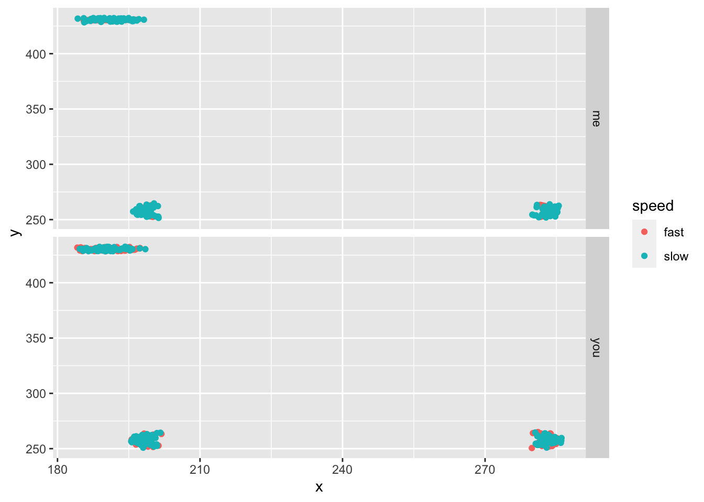

Mini Project 1: Get Ur Gait On
Introduction
Our second Miniproject explores several topics in the biomechanical basis of terrestrial locomotion. In particular, we’ll focus on how well the inverted pendulum model applies in predicting the maximum speed of walking humans and to what extent some kinematic variables, like pelvic tilt, contribute to differences in speed. We’ll also look at how these kinematic variables vary by size and sex. Our general goals are to:
- Use imageJ to perform kinematic analysis
- Use simple mathematical models to predict maximum limb walking speed
- Test predictions of walking speed with measurements and observations
- Evaluate the effects sex and size (scaling!) on your observations

The inverted pendulum model of bipedal locomotion
Conceptual basis
As we’ve learned, the inverted pendulum (IP) is rather simple model for understanding how we walk. Under the IP model, the leg forms the radius of an arc through which your center of mass (COM) travels. Thus, we can use concepts surrounding centripetal forces to estimate how fast we walk. So far, we’ve ignored air resistance and the inertial effects of other moving parts (e.g., arms) and assumed the leg is rigid and rotates about the ground at a single point of contact. Under these conditions, we can make predictions as to the maximum linear velocity of our COM. The force associated with this swinging pendulum can be described as
\[ F =ma_c=\frac {mv^2}{R} \]
where \(a_c\) the acceleration due to gravity and \(R\) is the leg length, or the radius of the inverted pendulum. From this we see that the maximum velocity of the rotating mass is never greater than the square root of the product of gravity and the radius, or, in biomechanical terms
\[ v_{max}^2 \leq gl \] \[ v_{max} \leq\sqrt{ gl} \]
where \(g\) is gravity and \(l\) the leg length. Thus, as we have learned in class, the Froude efficiency for walking is:
\[ Fr =\frac {v^2}{\sqrt{gL}}<=1 \]
where \(v\) and any walking velocity is less or equal to than \(v_{max}\).
As has become clear in our class discussions and demonstrations, the leg length is the radius and any increase in this length will result in a greater velocity. In addition, any biomechanical mechanism that increases the leg length during otherwise lower phases of the arc (e.g., pelvic tilt, that is lifting the plant-leg side of the pelvis, ) will keep the COM higher and increase the velocity.
A walker tilting its pelvis
Methods
There are two parts to this MP: (1) predicting and testing predictions of maximum walking speed and (2) comparisons of pendulum walking and normal walking at comfortable speeds. For both parts of this MP, it is important that you walk and not run. That means a duty factor of >0.5, i.e., you’ll always have a foot on the ground. Lab partners, police your colleagues to ensure this.
Sofware essentials
We’ll need a few pieces of software to analyze the kinematics of walking. First, download and install imageJ, a free image analysis package that just about everyone in the natural sciences uses at one point in their career. Second, download the following two plugin jar-files: MTrackJ_.jar (version 1.5.1) and imagescience.jar (version 3.0.0). Then install them to imageJ by selecting “Plugins” \(\rightarrow\) “Install” and navigating to these jar files and selecting “open”. MTrackJ is a simple tracking plugin that allows users to track points across video frames.
We’ll be working with video data captured with our phones. The file types associated with videos shot by phones are often unworkable in imageJ. We need a way of converting your phone videos to AVI format, a file type that imageJ can open. Videos can be rendered into AVI files using—you guessed it—free and open source tools like MPEG Streamclip, which can be downloaded here
Max out your pendulum
For this part of the MP you will compare a predicted maximum walking velocity (\(v_{max}\)) to observed maximum walking speed. First things first: mark off a distance of 5 meters on level ground (e.g., in the hall, atrium, etc.).
With your knees locked and your hands by your side and not swinging, walk on your heels as fast as you can across the the marked distance. Concentrate on not using any movement in your pelvis or knees. This may require some practice. You may, if you’re careful, have a lab partner push you gently to get you going at the start of the 5-m field. With a phone or watch, record the time it takes to traverse the 5-m distance.
Using these data, compute the velocity (in m s\(^{-1}\)) and compare this to your calculated \(v_{max}\). Please entere these data here. They can be accessed here for later analysis as well.
Full-tilt walking
The radius of your rotating mass can be effectively increased by subtle changes in posture, including active alterations in pelvic position. Pelvic tilt is one such mechanism and the angle of tilt can be measured using ImageJ. While pelvic tilt results in a lengthening of the plant-leg, there are other postural consequences.
Start with donning the markers and the yardstick with markers attached at its end as in the figure below. Attach one small marker low on the front of your shin. Attach the yardstick with binder clips to your pantwaist. Be sure that the yard stick rests right above your anterior superior illiac spines (those bony points on the front of your hip). This apparatus will amplify your pelvic motions and make data recording much easier. Have a project partner record video (in normal video mode) of your walk as you walk toward her/him over the 5-m course from the earlier experiment. Be careful that the full width of the yardstick in the frame at all times. You’ll perform two trials per partner: (1) walking normally at a comfortable speed and (2) walking normally but as quickly as possible. For both trials, use ImageJ and the MTrackJ plugin to track the markers on your body. From these data, you should compute two things: pelvic tilt angle (i.e. the difference between the maximum and minimum tilt angle) and the angle of the leg relative to the COM (the point below the navel. Please also enter these data here. Remember, these data can be accessed for analysis from this directory. Also notice there are data from previous iterations of the class. Be sure to use all of these in your analysis.
To analyze your videos in ImageJ, you’ll need to convert them to and AVI file and have the MtrackJ plugin installed (see above). Once the AVI file is stored in a directory, open it with ImageJ (File\(\rightarrow\) Import \(\rightarrow\) AVI . . .). Launch the MTrackJ plugin (Plugins \(\rightarrow\) MtrackJ) and follow the directions from the online manual. The goal here is to track four positions and calculate your two kinematic values: pelvic tilt and leg angle.
You lookin’ all marked and stuff
What to address in the report
- State an hypothesis as to how pelvic tilt will change with increased walking speeds. What is the biomechanical basis for this?
- State an hypothesis as to how pelvic tilt will change with human size in terms of mass and height and sex. Do your data support this?
- State an hypothesis as to how pendulum walking speed (\(v_{max}\)) will vary with human size and sex. Do your data support this?
- How did class-wide \(v_{max}\) compare to actual class-wide walking speed? What is the biomechanical basis for this?
As a group, please synthesize the results of your experiments and address these questions in a report in markdown format that follows the structure outlined on our Min-projects page. Reports and any data files reference by them are due Thursday, March 4th, by 11:59 PM. They can should be sent to Prof. Kenaley in a zipped directory over email.
A kick start
To answer these questions, you’ll have to concatenate a bunch of data. Fortunately, we’ve learned how to do this lately. However, for it to proceed smoothly, you might need some guidance, especially dealing with the data from the MTrackJ analysis. Let’s assume you produced 4 files for two teammates that each walked fast and slowly. If we had our data file names begin with “walk” and end in “.txt”, we could use a handy grep search to find all the files we want to analyze in the directory.
## [1] "walk_fast_me.txt" "walk_fast_you.txt" "walk_slow_me.txt"
## [4] "walk_slow_you.txt"Notice how they are similarly named “walk_speed_subject.txt”. That makes it easy to extract metadata from the file names. Now, as we did in the first , let’s concatenate all the data into one data frame for subsequent plotting and analysis.
walk.dat <- list() #make a list for storing
for(i in walk.files){
walk.i <- read_delim(i,delim="\t") #read data as a tibble
met.dat <- unlist(strsplit(i,"_")) #split i for metadata and unlist it
speed <- met.dat[2] #get speed
subject <- gsub(".txt","",met.dat[3]) #remove ".txt"
walk.dat[[i]] <- walk.i%>%
mutate(speed=speed,subject=subject)
}##
## ── Column specification ────────────────────────────────────────────────────────
## cols(
## Nr = col_double(),
## TID = col_double(),
## PID = col_double(),
## `x [pixel]` = col_double(),
## `y [pixel]` = col_double(),
## `t [sec]` = col_double(),
## `I [val]` = col_double(),
## `Len [pixel]` = col_double(),
## `D2S [pixel]` = col_double(),
## `D2R [pixel]` = col_logical(),
## `D2P [pixel]` = col_double(),
## `v [pixel/sec]` = col_logical(),
## `? [deg]` = col_double(),
## `?? [deg]` = col_double()
## )
##
##
## ── Column specification ────────────────────────────────────────────────────────
## cols(
## Nr = col_double(),
## TID = col_double(),
## PID = col_double(),
## `x [pixel]` = col_double(),
## `y [pixel]` = col_double(),
## `t [sec]` = col_double(),
## `I [val]` = col_double(),
## `Len [pixel]` = col_double(),
## `D2S [pixel]` = col_double(),
## `D2R [pixel]` = col_logical(),
## `D2P [pixel]` = col_double(),
## `v [pixel/sec]` = col_logical(),
## `? [deg]` = col_double(),
## `?? [deg]` = col_double()
## )
##
##
## ── Column specification ────────────────────────────────────────────────────────
## cols(
## Nr = col_double(),
## TID = col_double(),
## PID = col_double(),
## `x [pixel]` = col_double(),
## `y [pixel]` = col_double(),
## `t [sec]` = col_double(),
## `I [val]` = col_double(),
## `Len [pixel]` = col_double(),
## `D2S [pixel]` = col_double(),
## `D2R [pixel]` = col_logical(),
## `D2P [pixel]` = col_double(),
## `v [pixel/sec]` = col_logical(),
## `? [deg]` = col_double(),
## `?? [deg]` = col_double()
## )
##
##
## ── Column specification ────────────────────────────────────────────────────────
## cols(
## Nr = col_double(),
## TID = col_double(),
## PID = col_double(),
## `x [pixel]` = col_double(),
## `y [pixel]` = col_double(),
## `t [sec]` = col_double(),
## `I [val]` = col_double(),
## `Len [pixel]` = col_double(),
## `D2S [pixel]` = col_double(),
## `D2R [pixel]` = col_logical(),
## `D2P [pixel]` = col_double(),
## `v [pixel/sec]` = col_logical(),
## `? [deg]` = col_double(),
## `?? [deg]` = col_double()
## )## # A tibble: 6 x 16
## Nr TID PID `x [pixel]` `y [pixel]` `t [sec]` `I [val]` `Len [pixel]`
## <dbl> <dbl> <dbl> <dbl> <dbl> <dbl> <dbl> <dbl>
## 1 1 1 1 200. 252. 0 255 0
## 2 2 1 2 200. 253. 0 255 0.31
## 3 3 1 3 200. 253. 0 251 0.589
## 4 4 1 4 200. 253. 0 246 0.91
## 5 5 1 5 199. 253. 0 241 1.17
## 6 6 1 6 199. 254. 0 255 1.42
## # … with 8 more variables: `D2S [pixel]` <dbl>, `D2R [pixel]` <lgl>, `D2P
## # [pixel]` <dbl>, `v [pixel/sec]` <lgl>, `? [deg]` <dbl>, `?? [deg]` <dbl>,
## # speed <chr>, subject <chr>Sweet. But, notice that the column names given to the data are gobblygook with all those spaces in and “[pixel]” and “[sec]” in there. Let’s change them for easy referencing with a str_remove() (remove string) operation from thestringr package loaded with tidyverse . . .
## # A tibble: 6 x 16
## Nr TID PID x y t `I [val]` Len D2S D2R D2P
## <dbl> <dbl> <dbl> <dbl> <dbl> <dbl> <dbl> <dbl> <dbl> <lgl> <dbl>
## 1 1 1 1 200. 252. 0 255 0 0 NA NA
## 2 2 1 2 200. 253. 0 255 0.31 0.31 NA 0.31
## 3 3 1 3 200. 253. 0 251 0.589 0.589 NA 0.279
## 4 4 1 4 200. 253. 0 246 0.91 0.908 NA 0.321
## 5 5 1 5 199. 253. 0 241 1.17 1.16 NA 0.256
## 6 6 1 6 199. 254. 0 255 1.42 1.41 NA 0.249
## # … with 5 more variables: `v [pixel/sec]` <lgl>, `? [deg]` <dbl>, `??
## # [deg]` <dbl>, speed <chr>, subject <chr>That’s better. Now, let’s pare down the data to those columns we actually care about, “x” and “y”, the x and y positions of the points, “subject”, and “speed”. Also notice that the MTrackJ file contains a “TID” and “PID” column identifying to what track (which dot in the image) and point (the series of positions) to which the x and y positions belong. So let’s keep these columns, too, then dump the others, and give it a quick plot with ggplot.
walk.dat2 <- walk.dat%>%
select(TID,PID,x,y,subject,speed)
walk.dat2%>%
ggplot(aes(x,y,col=speed))+geom_point()+facet_grid(subject~.)
Notice that our leg point (TID=3) is higher than the hip. That’s odd! Well, not really. Convention holds that pixel 0,0 is the upper left of the image, so that means the coordinates are flipped vertically in our images. So let’s flip them back by finding the absolution value each y value minus the maximum y position (the image height).
walk.dat2 <- walk.dat2%>%
group_by(speed,subject)%>%
mutate(y=abs(y-max(y)))
walk.dat2%>%
ggplot(aes(x,y,col=speed))+geom_point()+facet_grid(subject~.)#grid it with columns = to speed
OK, all well ’n good. But does it make sense to identify our tracked points by “TID”, that is 1, 2, and 3? Wouldn’t it be better to change this to some character description like “hipL”, “hipR”, and “legR”, for left hip, right hip, and right leg, respectively. Let’s do it by changing TID to these strings using a series of mutate operations that replace each TID value. (if you do this, confirm the order is correct!)
walk.dat2%>%
mutate(TID=replace(TID, TID==1, "hipR"))%>%
mutate(TID=replace(TID, TID==2, "hipL"))%>%
mutate(TID=replace(TID, TID==3, "legR"))## # A tibble: 600 x 6
## # Groups: speed, subject [4]
## TID PID x y subject speed
## <chr> <dbl> <dbl> <dbl> <chr> <chr>
## 1 hipR 1 200. 178. me fast
## 2 hipR 2 200. 178. me fast
## 3 hipR 3 200. 178. me fast
## 4 hipR 4 200. 178. me fast
## 5 hipR 5 199. 177. me fast
## 6 hipR 6 199. 177. me fast
## 7 hipR 7 199. 177. me fast
## 8 hipR 8 199. 177. me fast
## 9 hipR 9 199. 176. me fast
## 10 hipR 10 199. 176. me fast
## # … with 590 more rowsNow it’ll be easier to keep track of which track we intend to reference in any plotting or analysis.
Now that we have data loaded, think about what sort of data you need to produce from this data set. You need angle, right? Hmmm, that should be easy to compute for each hip point with some simple trigonometry. Good luck!!!